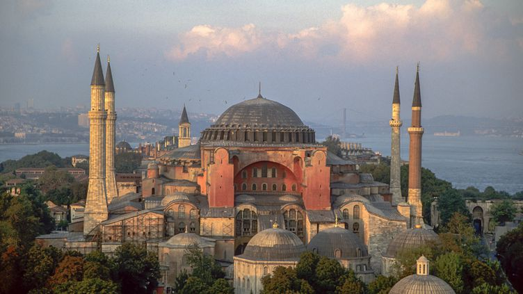
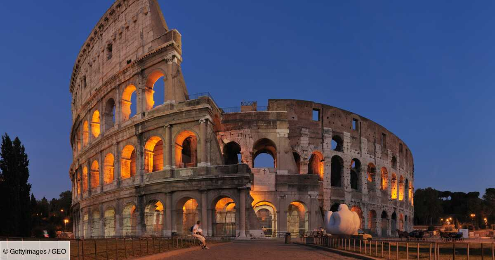
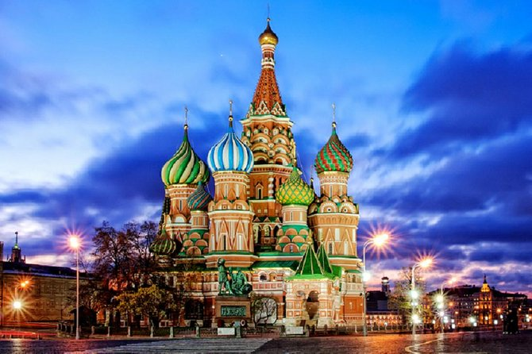
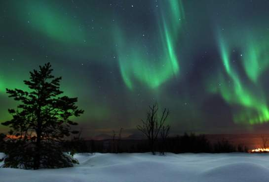
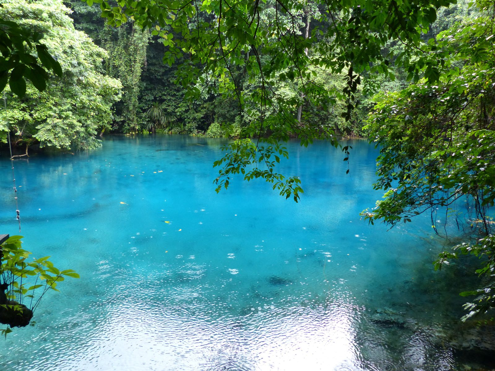
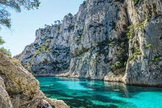

<table border>
<caption><h1>Les meilleurs destinations selon Selin</h1></caption>
<thead>
  <tr>
    <th>Pays</th>
    <th>Ville</th>
    <th>Lieu à visité</th>
    <th>Image</th>
  </tr>
</thead>

<tbody>
  <tr>
    <td>Turquie</td>
    <td>Istanbul</td>
    <td align="center">Mosquée de Sainte-Sophie</td>
    <td></td>
  </tr>

  <tr>
    <td>Italie</td>
    <td>Rome</td>
    <td align="center">Colisée</td>
    <td></td>
  </tr>

  <tr>
    <td>Russie</td>
    <td>Moscou</td>
    <td align="center">Cathédrale Basile-le-Bienheureux</td>
    <td></td>
  </tr>

  <tr>
    <td>Norvège</td>
    <td>Narvik</td>
    <td align="center">Aurora Borealis</td>
    <td></td>
  </tr>

  <tr>
    <td>Vanuatu</td>
    <td>Natawa</td>
    <td align="center">Le Blue Hole</td>
    <td></td>
  </tr>

  <tr>
    <td>France</td>
    <td>Marseille</td>
    <td align="center">Calanques de Marseille</td>
    <td></td>
  </tr>


</tbody>

<tfoot>
  <tr>
    <th>Pays</th>
    <th>Ville</th>
    <th>Lieu à visité</th>
    <th>Image</th>
  </tr>
</tfoot>


</table>
